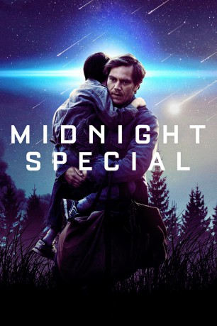
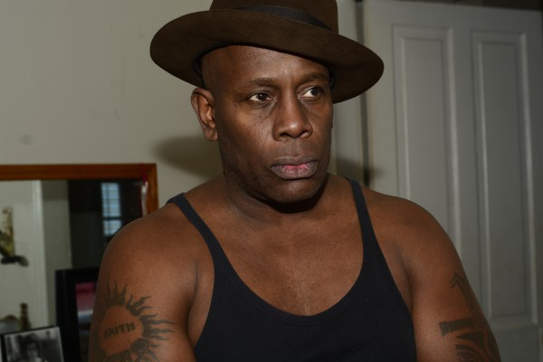
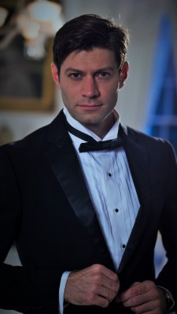
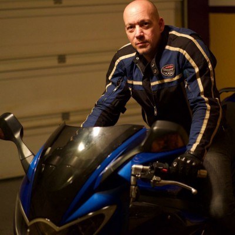

#3860 Midnight Special
 
 IMDB-Wertung: 6.7 / 10
IMDB-Wertung: 6.7 / 10  Tomatometer: 83
Tomatometer: 83  Metascore: 0
Metascore: 0 
Vater Roy (Michael Shannon) ist mit seinem kleinen Sohn Alton (Jaeden Lieberher) auf der Flucht- er will ihn beschützen und herausfinden, was hinter den mysteriösen, außergewöhnlichen Fähigkeiten des Jungen steckt, wegen denen der Kleine eine Schutzbrille tragen muss. Was als Flucht vor religiösen Extremisten und vor der Polizei beginnt, wird zur landesweiten Menschenjagd, inklusive Regierungsbeteiligung. NSA-Spezialist Sevier (Adam Driver) will möglichst viel über den besonderen Jungen und seine Fähigkeiten erfahren und nimmt zu diesem Zweck Altons Ziehvater und Sekten-Guru Calvin (Sam Shepard) samt dessen Gemeinde in Gewahrsam, um sie einem Verhör zu unterziehen. Währenddessen setzen Roy und sein Kumpel Lucas (Joel Edgerton) alles daran, Alton vor dem Schlimmsten zu bewahren. Und sie wollen ihm dabei helfen, sein Schicksal zu erfüllen, das die ganze Welt beeinflussen könnte...
Jahr: 2016
Dauer: 111 Minuten
FSK: 12
Land: USA Studio: Warner Bros.Tonspuren: DD5.1 - ,
Untertitel:
Auflösung: 1080p (1920x800) Größe: 5099 MB
Genre: Thriller, Drama, Sci-Fi, Abenteuer
Regisseur: Jeff Nichols
Drehbuch: Umanosuke Iida
Soundtrack:
Darsteller:
 Michael Shannon als Roy
Michael Shannon als Roy Joel Edgerton als Lucas
Joel Edgerton als Lucas Kirsten Dunst als Sarah
Kirsten Dunst als Sarah Jaeden Lieberher als Alton
Jaeden Lieberher als Alton Adam Driver als Sevier
Adam Driver als Sevier Bill Camp als Doak
Bill Camp als Doak Scott Haze als Levi
Scott Haze als Levi Sam Shepard als Calvin Meyer
Sam Shepard als Calvin Meyer Paul Sparks als Agent Miller
Paul Sparks als Agent Miller David Jensen als Elden
David Jensen als Elden Sharon Landry als Merrianne, Doak's Wife
Sharon Landry als Merrianne, Doak's Wife Dana Gourrier als Sharon Davison, Counselor
Dana Gourrier als Sharon Davison, Counselor- Sharon Garrison als Jane Adams, Sarah's Mother
- Allison King als Hannah, Ranch Member
 Sean Bridgers als Fredrick, Ranch Member
Sean Bridgers als Fredrick, Ranch Member Lucy Faust als Caroline, Ranch Member
Lucy Faust als Caroline, Ranch Member-  James Moses Black als Military Officer
 Yvonne Landry als Motel Clerk
Yvonne Landry als Motel Clerk Ann Mahoney als FBI Agent #1
Ann Mahoney als FBI Agent #1 Garrett Hines als FBI Agent #2
Garrett Hines als FBI Agent #2 Kerry Cahill als Linda, NSA Staffer
Kerry Cahill als Linda, NSA Staffer Wayne Pére als Prison FBI Agent
Wayne Pére als Prison FBI Agent Dane Rhodes als Oil Worker
Dane Rhodes als Oil Worker Billy Slaughter als NSA Staffer
Billy Slaughter als NSA Staffer Sam Malone als Soldier at Roadblock
Sam Malone als Soldier at Roadblock James DuMont als Base Commander
James DuMont als Base Commander- Nancy Grace als Nancy Grace
 John L. Armijo als National Guardsman , uncredited
John L. Armijo als National Guardsman , uncredited Jon Arthur als Roadblock Soldier , uncredited
Jon Arthur als Roadblock Soldier , uncredited- Michelle Benet als Car Crash Victim , uncredited
- Hayley Blackall als Humanoid / Dancer , uncredited
- Nathan Brimmer als FBI Agent , uncredited
- David Michael Cefalu als FBI Agent , uncredited
- Kyle Crosby als Cult Member , uncredited
- Robert 'Bigg Sarge' Deon als National Guard Soldier , uncredited
- Alexander Eldimiati als Stand in , uncredited
- Rebecca Gamble als Religious Cult Member , uncredited
- Melodi Hallenbeck als Amish Lady , uncredited
- Wendy Clarice Jordan als Polygamist Wife , uncredited
-  Justin Lebrun als Cult member , uncredited
-  John R Mangus als FBI Agent , uncredited
- Claire McReynolds als Young Religious Cult Member , uncredited
 Mike R. Moreau als Ranch Man , uncredited
Mike R. Moreau als Ranch Man , uncredited- Duane Moseley als Rancher , uncredited
- Scott Everett Nichols als FBI Agent , uncredited
 Jay Oliver als Rancher , uncredited
Jay Oliver als Rancher , uncredited- Joshua Probus als Child Cult Member , uncredited
- Zachary Probus als Young Religious Cult Member , uncredited
- Kari Shemwell als Cult member , uncredited
- Edward Rashad Smith als Soldier , uncredited
Datei: X:\2016(G-M)\Midnight Special (2016, FSK12, 1920x800).mkv seit 22.06.2016
Festplatte: HD 2016(A-Z)
 Es gibt insgesamt 164 Filme in der Gruppe '2016(G-M)'
Es gibt insgesamt 164 Filme in der Gruppe '2016(G-M)'